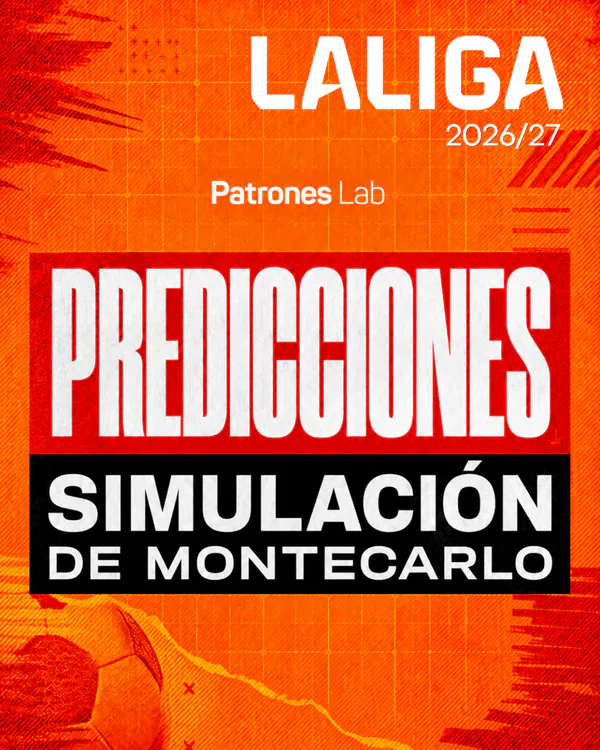

1
탐색
배경과 목표문제와 개선하려는 의사결정, 관련 사용자와 기대 결과를 파악합니다.
Power BI Qlik Cloud
Qlik Cloud Looker Studio
Looker Studio SQL Server
SQL Server
데이터 분석
Patrones Lab은 일상과 현실에서 일어나는 현상을 데이터로 분석하는 공간입니다.
공개 데이터를 활용한 독립 프로젝트를 통해 패턴을 찾고 현상이 나타나는 양상을 설명하며, 발견한 내용을 맥락과 함께 전달합니다.
질문을 세우고 데이터를 정리해 명확하게 분석한 뒤 결과를 시각화하는 것이 목표입니다.

저는 Malcolm Di Pietro Cagliari입니다. 보험계리사이자 데이터 분석 전문가로, 은행·보험·항공 운송 분야에서 비즈니스 인텔리전스, 기업 보고, 데이터 모델링, 예측 분석 업무를 해 왔습니다.
저는 비즈니스 요구와 데이터 기반 해법을 연결하는 일을 합니다. 핵심 성과 지표(KPI)를 정의하고 정보를 체계화하며, 대시보드와 모델을 만들어 상황을 더 잘 이해하고 맥락에 맞게 판단하도록 돕습니다.
문제와 개선하려는 의사결정, 관련 사용자와 기대 결과를 파악합니다.
사용할 수 있는 자료의 출처, 갱신 주기, 신뢰성과 주요 한계를 확인합니다.
데이터를 정리하고 정제한 뒤 결합해 일관되고 활용 가능한 자료를 만듭니다.
정해진 목적에 맞는 분석, 모델 또는 대시보드를 개발합니다.
분석 결과의 일관성과 안정성, 실제 비즈니스 상황에 부합하는지 점검합니다.
최종 작업을 문서화하고 반복 과정을 자동화하며 향후 개선에 반영할 의견을 검토합니다.
공개 데이터를 활용한 응용 프로젝트와 분석 방법, 시각화 결과를 모았습니다. 분야, 도구 또는 결과물 유형으로 필터링해 살펴보세요.


런던 에어비앤비의 가격과 숙소 유형, 예약 가능 일수, 최소 숙박일 수, 지역별 차이를 비교하는 탐색적 분석입니다.


StatsBomb 공개 데이터로 슛별 득점 확률을 추정하는 로지스틱 회귀 모델입니다. 경기 단위로 검증해 2022 카타르 월드컵에 적용합니다.
프로젝트 열기
StatsBomb 공개 데이터로 축구 기대 위협을 추정하는 확률 모델입니다. 다음 다섯 번의 플레이 안에 득점할 확률을 구합니다.


StatsBomb 공개 데이터로 2022 월드컵 선수 개인의 경기력을 정리하고 백분위 레이더 차트로 선수들을 비교합니다.


Power BI 대화형 대시보드에서 Spotify Charts의 스트리밍 수, 순위, 시기별 추세와 지역별 음악 분포를 분석합니다.


Elo 레이팅으로 2026 월드컵 시나리오 100만 개를 시뮬레이션해 준결승·결승 진출 및 우승 확률을 추정합니다.



Elo 레이팅으로 2026/27 라리가 시나리오 100만 개를 시뮬레이션해 대회의 주요 결과 확률을 추정합니다.


Elo 레이팅과 푸아송 득점 모델로 2026/27 네이션스리그 시나리오 100만 개를 시뮬레이션해 조 1위, 토너먼트 진출과 우승 확률을 구합니다.

메시지를 남겨 주시면 빠른 시일 내에 답변드리겠습니다.